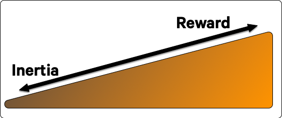
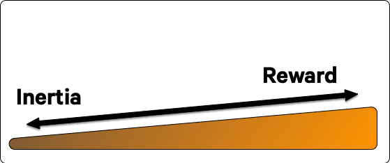
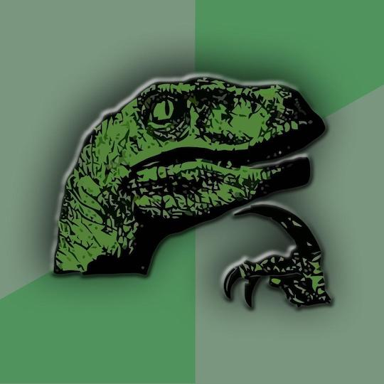
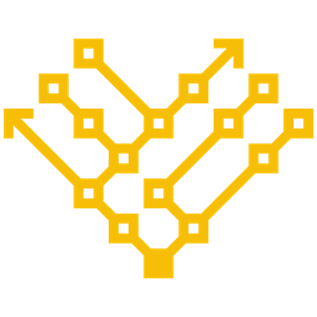
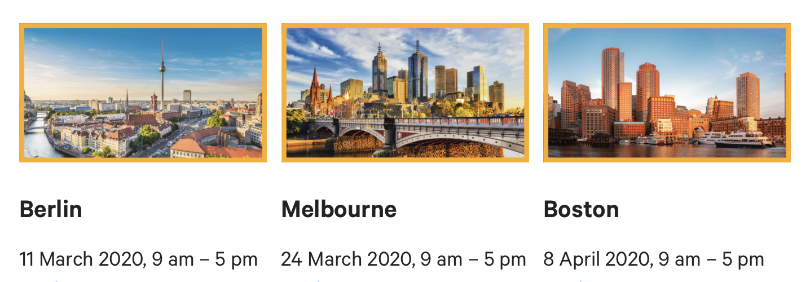

Showoff Menu
Downloads
Close
Press ? for help.
All features are anonymous.
Press ? for help.
All features are anonymous.

#! /usr/bin/env python
print ('Hello World!')#! /usr/bin/env python
print ('Hello World!')We did not want to hurt the people using Python 2. So, in 2008, we announced that we would sunset Python 2 in 2015, and asked people to upgrade before then. Some did, but many did not. So, in 2014, we extended that sunset till 2020.
So far, this sounds like I'm dishing on Python. I want to be clear that I don't intend it this way at all. They're amazing and a victim of their own success. This is a good problem to have.
So far, this sounds like I'm dishing on Python. I want to be clear that I don't intend it this way at all. They're amazing and a victim of their own success. This is a good problem to have.
Example:
it's hard to make collectors work better when people depend on their two very
different and unrelated side effects!
# Ensure our internal mirror is configured before we install any packages
# ... but side effect inadvertently realizes all virtual packages!
Yumrepo <| |> -> Package<| |>Sometimes it feels like we're paddling really hard just to stay where we are.


Friction is the factor that makes forward motion more difficult. I'm representing it as the slope in this drawing. And this we can affect.
module Puppet::Parser::Functions
newfunction(:strlen, :type => :rvalue) do |args|
raise "Wrong number of args" unless args.size == 1
raise "Wrong type of args" unless args.first.is_a String
args.first.length
end
end:rvalue parameters were fine; bleeding edge, remember?
:arity too. What does that even mean?module Puppet::Parser::Functions
newfunction(:strlen, :type => :rvalue) do |args|
raise "Wrong number of args" unless args.size == 1
raise "Wrong type of args" unless args.first.is_a String
args.first.length
end
endmodule Puppet::Parser::Functions
newfunction(:strlen, :type => :rvalue) do |args|
raise "Wrong number of args" unless args.size == 1
raise "Wrong type of args" unless args.first.is_a String
args.first.length
end
endEh. They're good enough.
Function name.
module Puppet::Parser::Functions
* newfunction(:strlen,
:type => :rvalue,
:doc => "Just a naive strlen example",
) do |args|
raise "Wrong number of args" unless args.size == 1
raise "Wrong type of args" unless args.first.is_a String
args.first.length
end
endDocumentation.
module Puppet::Parser::Functions
newfunction(:strlen,
:type => :rvalue,
* :doc => "Just a naive strlen example",
) do |args|
raise "Wrong number of args" unless args.size == 1
raise "Wrong type of args" unless args.first.is_a String
args.first.length
end
endParameter validation and handling.
module Puppet::Parser::Functions
newfunction(:strlen,
:type => :rvalue,
:doc => "Just a naive strlen example",
) do |args|
* raise "Wrong number of args" unless args.size == 1
* raise "Wrong type of args" unless args.first.is_a String
args.first.length
end
endImplementation.
module Puppet::Parser::Functions
newfunction(:strlen,
:type => :rvalue,
:doc => "Just a naive strlen example",
) do |args|
raise "Wrong number of args" unless args.size == 1
raise "Wrong type of args" unless args.first.is_a String
* args.first.length
end
endFunction name.
# @summary
# Just a naive strlen example
* Puppet::Functions.create_function(:'mymod::strlen') do
# @param value
# The string to calculate the length of
# @return [Integer]
# The length of the input string
dispatch :default_impl do # invoke default_impl method when matched
param 'String', :value
end
def default_impl(value)
value.length
end
endDocumentation.
* # @summary
* # Just a naive strlen example
Puppet::Functions.create_function(:'mymod::strlen') do
* # @param value
* # The string to calculate the length of
* # @return [Integer]
* # The length of the input string
dispatch :default_impl do # invoke default_impl method when matched
param 'String', :value
end
def default_impl(value)
value.length
end
endParameter validation and handling.
# @summary
# Just a naive strlen example
Puppet::Functions.create_function(:'mymod::strlen') do
# @param value
# The string to calculate the length of
# @return [Integer]
# The length of the input string
* dispatch :default_impl do # invoke default_impl method when matched
* param 'String', :value
* end
def default_impl(value)
value.length
end
endImplementation.
# @summary
# Just a naive strlen example
Puppet::Functions.create_function(:'mymod::strlen') do
# @param value
# The string to calculate the length of
# @return [Integer]
# The length of the input string
dispatch :default_impl do # invoke default_impl method when matched
param 'String', :value
end
* def default_impl(value)
* value.length
* end
endInertia is constant and significant. And rewards are actually quite small.
puppet-strings.When inertia and friction is greater than reward, we have stasis.
Can I programatically identify the components we just looked at?
Since we've only got a tiny window to work with, let's not waste it with friction.
It turns out that identifying the parts of a Puppet 3.x function that we care about is almost completely automatable.
[~/Projects/puppetlabs-stdlib]$ puppet_function_updater --verbose
INFO: Creating lib/puppet/functions/stdlib/abs.rb
INFO: Creating lib/puppet/functions/stdlib/any2array.rb
INFO: Creating lib/puppet/functions/stdlib/any2bool.rb
INFO: Creating lib/puppet/functions/stdlib/assert_private.rb
INFO: Creating lib/puppet/functions/stdlib/base64.rb
INFO: Creating lib/puppet/functions/stdlib/basename.rb
[...]
INFO: Creating lib/puppet/functions/stdlib/values_at.rb
INFO: Creating lib/puppet/functions/stdlib/zip.rb
INFO: Functions generated. Please inspect for suitability and then
INFO: update any Puppet code with the new function names.
INFO: See https://puppet.com/docs/puppet/latest/custom_functions_ruby.html
INFO: for more information about Puppet's modern Ruby function API.Remember that the legacy API just passed all arguments as a single untyped array and relied on the programmer to know what to do with that.
dispatch that does the same thing.dispatch :default_impl do
# Call the method named 'default_impl' when this is matched
# Port this to match individual params for better type safety
repeated_param 'Any', :arguments
enddef default_impl(*arguments)
# paraeter handling and implementation copied in
end
GitHub exposes a fantastic BigQuery dataset of all their public repositories.
Generate a list of all Puppet modules with legacy functions:
SELECT DISTINCT repo_name
FROM `bigquery-public-data:github_repos.files`
WHERE STARTS_WITH(path, 'lib/puppet/parser/functions')
AND ref = 'refs/heads/master'I was left with 47 modules with edge cases to account for, but after a couple iterations and improvements, it ported all valid functions flawlessly.

So then I ran it and went out for the night.
The automated pull request included links to the accompanying tutorial that describes these steps on how to finish the port.
stdlib!)puppet-strings format.Some were sort of neutral:
Cute idea, however I’m not going to merge it unless someone gives it a smoke test at least.
Some were very positive:
I love this initiative by @binford2k ❤️ #puppetize #opensource
But the two biggest annoyances were:
Also, nobody asked or suggested it, but I should have DCO signed the commits.
I'm grateful to all of you and to the culture we have built here. Even when a contribution isn't perfect, it's recognized and valued as a genuine desire to help improve things. I credit Vox Pupuli for a lot of that.
puppetlabs/mysql update.init.pp file.
fact() function?Notice the giant ribbon in the corner? These handful of slides are just me spitballing the future! Don't expect these to be promises.
My job is to lower your friction as a developer.
Most importantly, both of these tools are powered by open datasets that are finally just weeks from going public. You'll be able to use the same data to invent other tooling.
Our goal is that maintaining quality should be easier than not.
These points apply to you in your own open source projects too.
As both a consumer and as a producer.


CFP for all three is open: submit a talk!